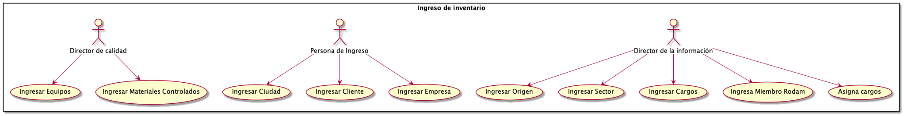
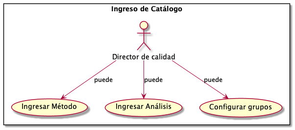
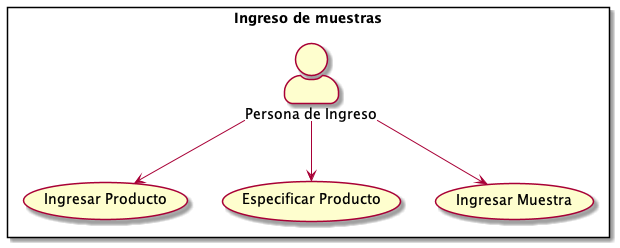
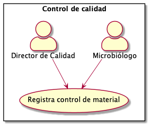
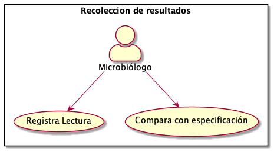
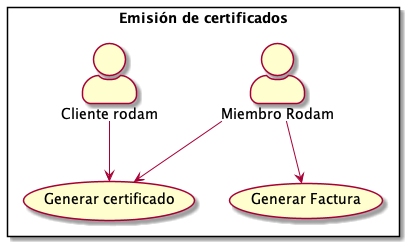
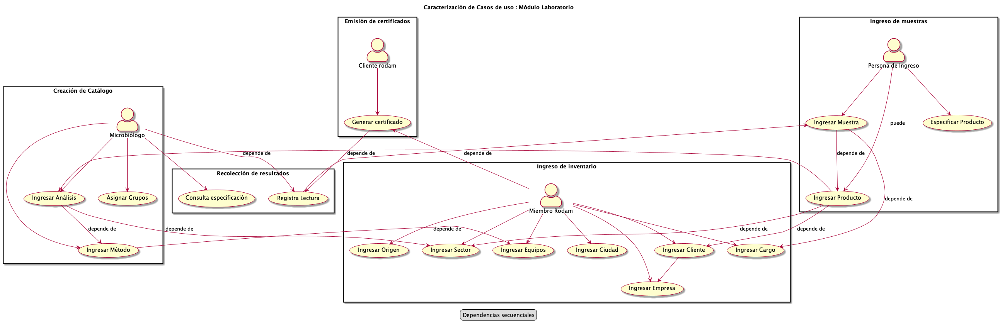

Documento de Especificación de Requerimientos¶
- author
Jonatan Ahumada Fernández
- contact
- date
<2021-01-15 Fri>
Introducción¶
Este documento es el SRS para el Módulo Laboratorio del Sistema de Información de Rodám Análisis S.A. Su propósito es describir los requerimientos que debe cumplir el Módulo Laboratorio
Este documento está dirigido principalmente a los miembros del equipo de desarrollo, pero también será de gran utilidad para los stakeholders que se pregunten ¿qué hace el Módulo Laboratorio?
Referencias a otros documentos¶
Para una visión general del Sistema de Información de Rodám Análisis S.A se debe consultar el Documento de proyecto.
Descripción General¶
El *Módulo Laboratorio* se ocupa del ciclo de vida de los análisis de laboratorio. Rodam Análisis caracteriza su proceso de análisis de laboratorio de la siguiente manera:
Ingreso
Preprocesamiento
Siembra
Lectura
Recolección de resultados
Emisión de certificados
El caso de uso principal de la aplicación de escritorio será registrar el flujo de un análisis, desde que entra el sistema mediante su ingreso, hasta la producción de su certficado de análisis.
Por su parte, el Módulo Web se ocupará de emitir esos certificados a los clientes de Rodam Análisis por medio de una página web.
Funcionalidades del sistema¶
Nos referimos a las funcionalidades del sistema como casos de uso. Es útil considerar a los casos de uso como pertenecientes submódulo. A esto lo llamamos caracterización de los casos de uso. Esto facilita saber a qué parte del Módulo Laboratorio nos referimos.
Los submódulos existentes en este momento son:
1. Inventario 3. Catálogo 2. Ingreso de Muestras 3. Recolección de resultados 4. Control de calidad 4. Emisión de certificados
Caracterización de los casos de uso¶
Ahora veremos cómo estos casos de uso se subdividen naturalmente en submódulos. Son agrupaciones de tareas relacionadas dentro del Modulo Laboratorio.
A continuación veremos los casos de uso en más detalle.
     Dependencias secuenciales¶
Las dependencias secuenciales de los casos de uso muestran qué funcionalidades dependen de que otras se hayan ejecutado previamente. Por ejemplo, ingresar un análisis depende de que haya métodos que agregar en ese análisis.
Esta visualización es útil para diseñar el flujo de eventos de una interfáz de usuario.
